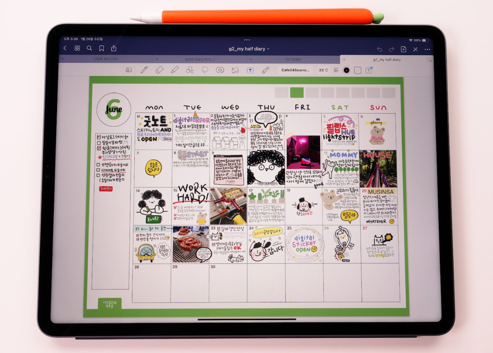
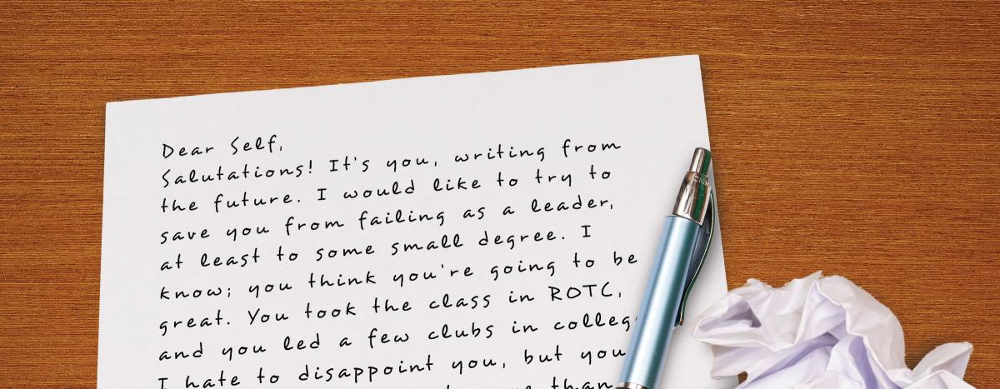
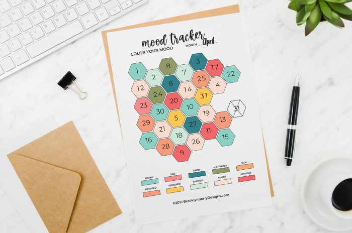

inspiration: diary decroating trend on the iPad
users will be able to save one picture and one caption to fit in the box of a date on the calendar. When it adds up, users will have a calendar full of pictures of each day to remember and record their days.
inspiration: school activity to write letters to yourself in a year + postcard website
users will be able to write a letter to themselves at some point in the future, and have a collection of their past letters on a lightweight website.
inspiration: mood trackers on bullet journals
users will be able to record their moods as a color of their choice. They will be able to revisit and view the color they selected from the color wheel from the past.
link back to home!